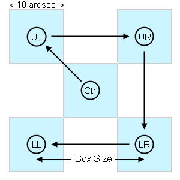
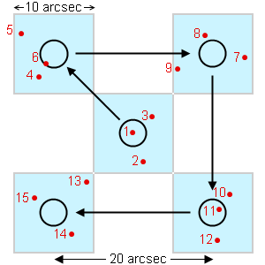

The NICFPS:Dither:Point Source Random script allows you to take a sequence of exposures in a square pattern plus a point in the middle. This pattern is typically used for point sources.
The requested number of exposures is taken at each point before moving on to the next. The order is as shown below. Any dither point may be omitted by unchecking its checkbox before running the script. Ctr is always your current telescope pointing, even if you omit Ctr.

Dither pattern without randomization
Controls include:
Randomization helps to reduce residuals when median combining the images, especially with #Exp > 1. The random component is evenly distributed across the region independently in x and y.
For example, if #Exp = 3 and Box Size = 20", the script might do the following, taking exposures in the order indicated by red numbers:

Dither pattern with randomization